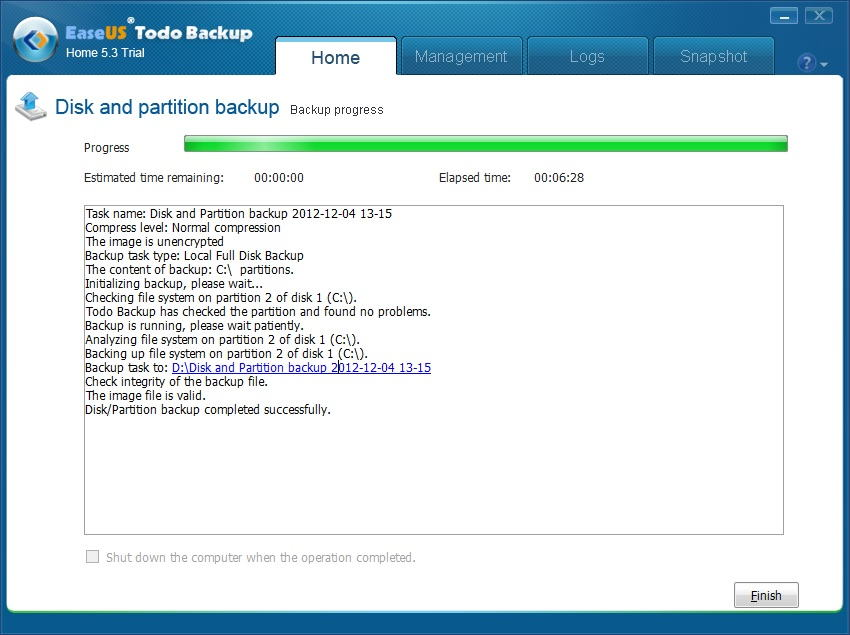

| TOP | weblog | TIPS | Works | リンク | 掲示板 |
| 2012-12-04 EaseUS Todo Backup でバックアップ/レストアをやってみました フリーのバックアップソフト「EaseUS Todo Backup」でパーテションのバックアップ/レストアをやってみました。 いけないことだと思いつつ、期間限定の体験版ソフトをレストア・インストールすることで繰り返し誓いたいための作戦です。 だって高いんだもの。 lenovo ThikPad E520(\26,000!)でディスクトップ上のアプリの操作を録画してコメントやナレーションを付けてビデオマニュアルを作成するツールはいくつか市販されています。 CPU:Intel Celeron B810 1.6GHz（デュアルコア） メモリ：６ＧＢ ＯＳ：Windows８ Proです。 50.8GBのパーテション、使用領域20.9GBを同じHDDのパーテションにイメージコピーしてみました。 バックアップ時間は6分３０秒、バックアップファイルのサイズはデフォルト圧縮で10GBでした。  復元はリブート後、ログオン前のシステム画面（？）で行われます。 復元時間は約１５分でした。 バックアップ・レストアがリニアに比例するか、また時間があったら試してみたいです。 「パーテションマジック」とか「ノートン ゴースト」みたいに結構高額なソフトウェアとそん色ないどころか結構速いソフトがフリーな時代です。 パーテション全体だけではなく、フォルダやファイルの個別指定バックアップも出来るみたいです。 ミラーリングして寝る前にバックアップ仕込んどいて朝になったら終わっているっな感じが理想かな？ |